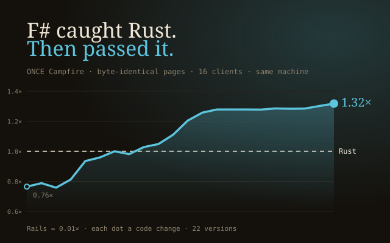

01 · the port
The F# port
Translate it, byte for byte.
The ruleDo the same work per request as Basecamp's Rust port, and render every screen byte-identical to it.
Translated crate by crate from the Rust port by phased agent workflows: its own front server, SQLite layer, HTML writer and HTML5 parser, all in F#. It matched every parity screen byte for byte, then ran 1.24-1.33x the Rust port it was translated from. Basecamp's Rust has since added full-page caching, so on today's harness the port does 0.71× Rust on the room page.
F#ASP.NET CoreFalcoOwn front serverOwn SQLite layerhtml5ever port
Open F# port → Source ↗
